Plantae

O Plantae foi um projeto de TCC desenvolvido por mim e mais 4 amigos onde fizemos uma estufa com o intuito de automatizar o plantio domestico, utilizando de diversos sensores e um reservatório de água para proporcionar uma autonomia de alguns dias para a planta. O usuário poderia verificar status da mesma pelo site, com informações sobre os sensores.
 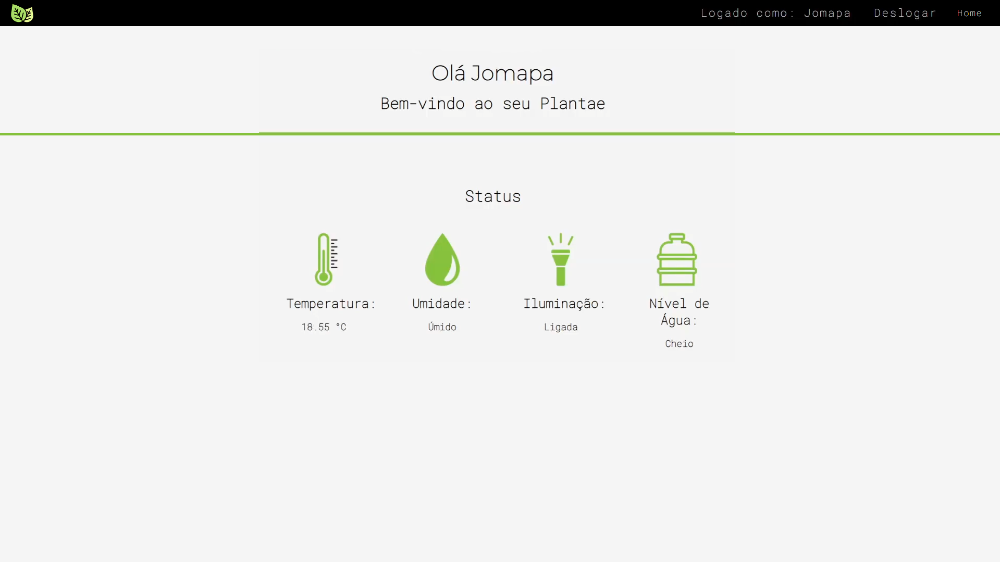
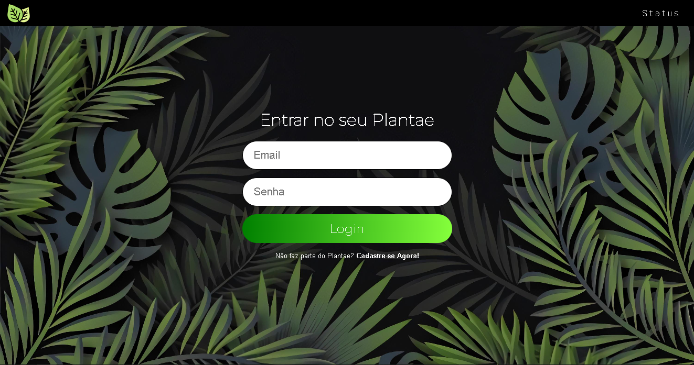
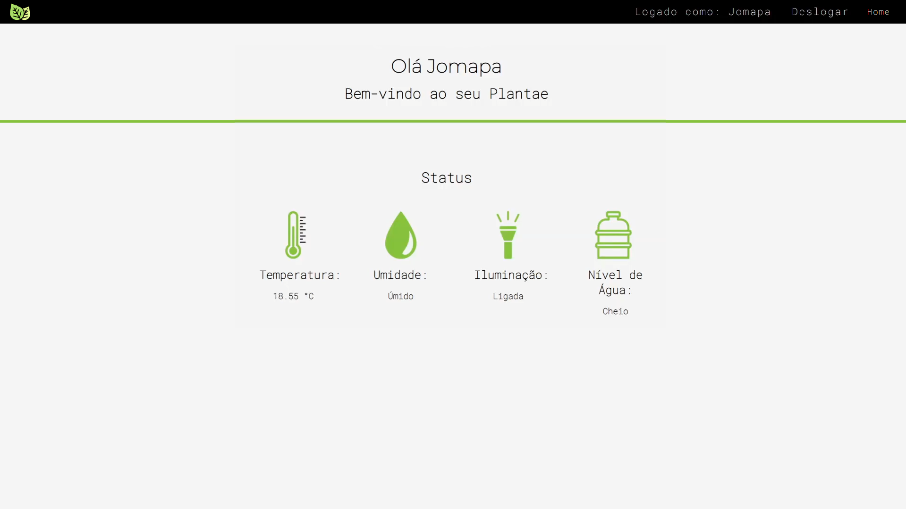
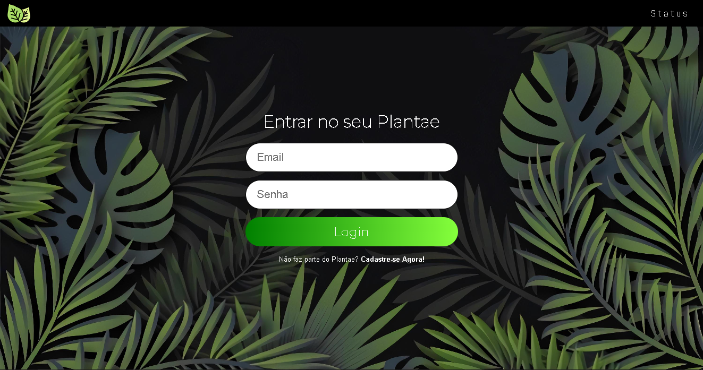
 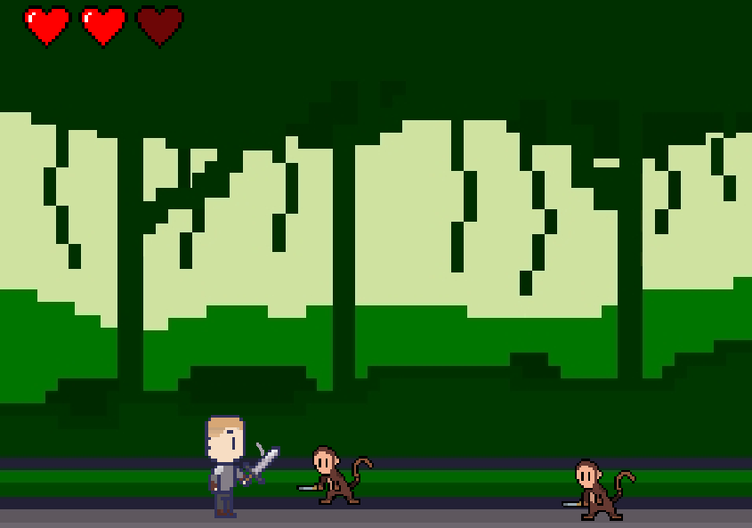
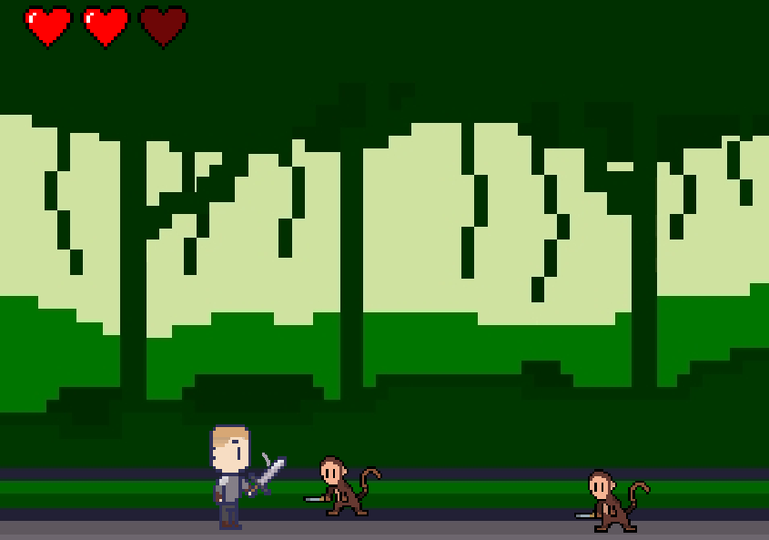
 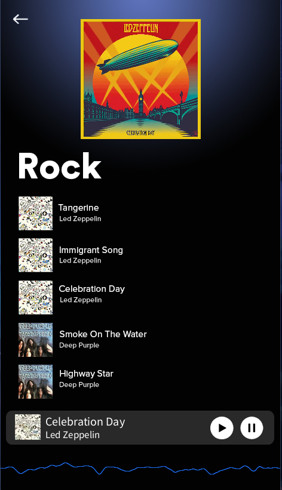
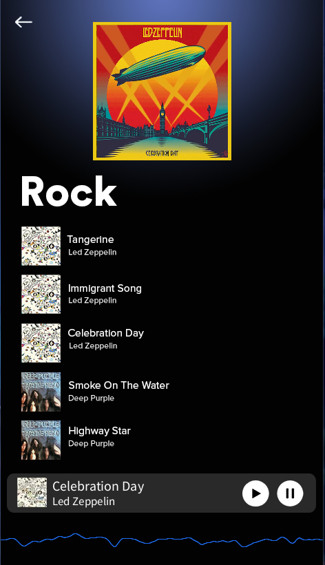

 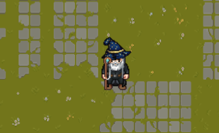
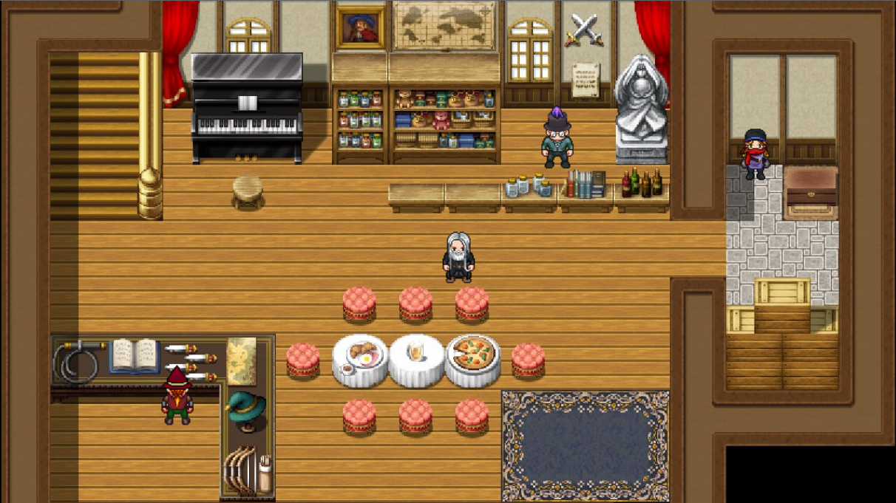
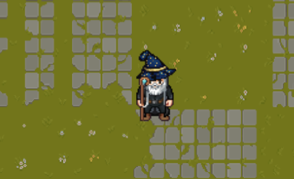
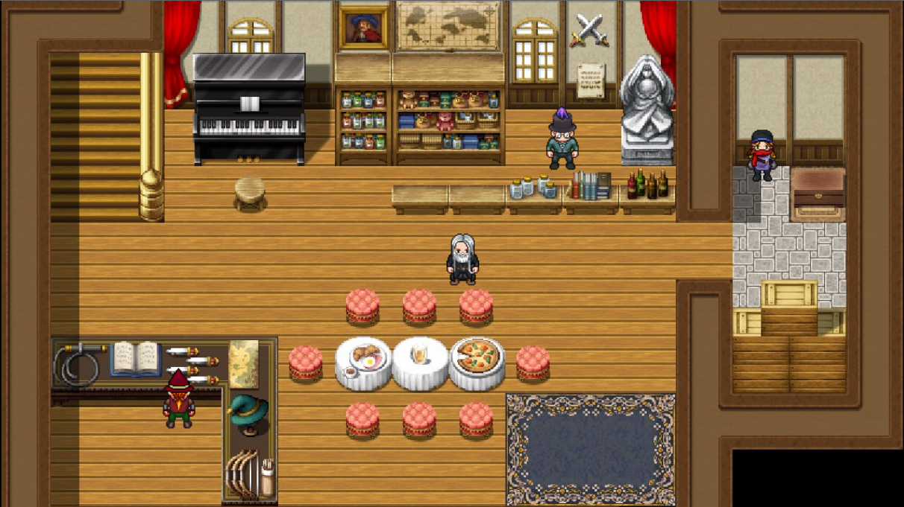